이번 글에서는 S3 에 있는 이미지를 Lambda@edge 를 통하여 리사이징 하고 새로운 이미지를 CloudFront 를 통하여 Caching 해보도록 하겠습니다.
목차
배경
서비스를 운영할 때, 대부분 이미지는 배경, 배너 또는 썸네일로 사용합니다. 이미지를 여러가지 용도로 사용하려면 각 사이즈 별로 이미지 파일을 갖고 있어야 합니다. 그리고 예를들어 쇼핑몰에서 사용자에게 더 좋은 인상을 주기위해 고화질 이미지를 사용합니다.
그러나 문제는 사이즈 종류가 다양해질수록 용량이 기하급수적으로 증가할 것이고 이미지를 관리하기가 쉽지 않습니다. 또한 고화질 이미지는 용량이 크면 이미지 loading 시간이 늘어나서 사용자가 답답함을 느끼게되는 좋지 않은 영향을 끼칩니다. 그렇기 때문에 적절한 이미지를 사용해야 합니다.
서버 관리자 입장에서는 이미지 생성과 삭제가 빈번할 수록, 이미지 작업을 처리하는 리소스(cpu, memory, storage) 비용도 증가합니다. 서비스에 1만개의 새로운 사이즈의 이미지가 필요하면 그만큼 storage 가 필요할텐데, 이미지당 100kb 라 가정했을 때, 1GB 가 필요합니다. 1GB 저장공간을 국내 호스팅에서 빌린다면, 금전적 비용이 들기 때문에 부담이 큽니다.
이러한 일반적인 방법으로는 지속적으로 서비스를 운영함에 있어서 어느 순간에 서비스가 급성장하면 어떻게 손을 써야 할지 막막해 질 것입니다.
그래서 이제 소개할 내용은 이러한 문제점을 해결 할 수 있는 방법입니다. 미리 말씀드리면 내용은 복잡하지만, 이해하면 관리하는 측에서 굉장히 편리하고 성능과 비용을 모두 얻어갈 수 있을거라고 생각합니다.
CloudFront & Lambda@edge
이해를 돕기 위한 큰 흐름 부터 설명합니다. 지도에 표시된 요소는 총 3가지 입니다.
Lambda (N Vriginia 리전) - 버지니아 리전에 생성한 Lambda 함수
location (λ표시) - CloudFront의 지역 단위인 edge location, 버지니아 Lambda 함수를 복제하여 각 edge location 에 배포한 상태
user - CloudFront edge location 에 요청하는 클라이언트
위의 요소들을 이해 하셨다면, Lambda@edge 라고 불리는 이유를 쉽게 알 수 있습니다.
버지니아 Lambda 함수를 복제하여 CloudFront 의 각 edge location 에 전역으로 배포함을 의미합니다. 클라이언트는 어떤 리전에서 요청하던지간에 edge location 에 배포된 Lambda@edge 함수를 거쳐서 응답받게 됩니다.
Lambda@edge 기본 동작 원리
 Image Source: Amazon Lambda Edge Documentation
Image Source: Amazon Lambda Edge DocumentationLambda@Edge는 Cloudfront Edge 전후 위치에서 실행되는 Lambda 서비스 입니다.
기본 요소
End user: 리소스 요청자
CloudFront Cache: 요청 받은 리소스의 캐싱 여부 판단
Origin server: CloudFront 에서 지정한 리소스의 origin
- ex) 리소스가 S3 에 있는 경우, origin 주소: {Bucket}.s3.amazonaws.com
Lambda@edge 함수를 trigger 할 4개의 CloudFront 이벤트를 선택 할 수 있습니다.
Viewer request: End user 가 CloudFront 로 보내는 요청
Origin request: CloudFront 에서
cache miss가 일어나면 origin에 리소스 요청Origin response: Origin 으로 부터 리소스를 CloudFront 에 응답
Viewer response: origin 의 리소스 or
cache hit된 응답
예를 들어 이미지를 요청(Viewer request)한다고 가정합시다. CloudFront 에서는 요청 이미지 주소로 캐싱된 이미지의 여부를 판단합니다. 캐싱된 이미지가 있다면 cache hit 로 판단하여 바로 응답(Viewer response) 합니다.
그러나 캐싱된 이미지가 없다면 cache miss 로 판단하여 Origin server 로 리소스를 요청(Origin request) 합니다. Origin 은 이미지 존재 여부를 판단하여 CloudFront 로 응답(Origin response) 합니다. 리소스가 존재한다면 End User 는 이미지를 응답(200) 받고, 그렇지 않다면 Not Found 응답(404) 받을 것입니다.
이미지 리사이징 구현
이제부터 이미지 리사이징 구현을 위한 설명입니다.
1) 서비스 요소
필수 요소
CloudFront - 이미지 캐싱 및 Lambda 함수를 배포할 edge location
Lambda - 이미지 리사이징을 위한 함수
S3 - 리사이징할 이미지가 저장된 storage
IAM(Identity and Access Management) - 위 이미지에는 없지만, Lambda 함수가 각 요소를 실행하기 위한 역할을 생성하는데 필요합니다.
부가 요소
CloudWatchLog - Lambda 함수 실행시, 디버깅 하기 위한 로그 출력 용도
AWS Cloud9 - Lambda 함수를 작성하기 위한 브라우저 code editor, Lambda 함수를 .zip 파일로 매번 업로드해야하는 불편함을 없애기 위해 사용
2) S3 버킷 생성
S3 콘솔에 접속한 후, 버킷을 생성합니다.
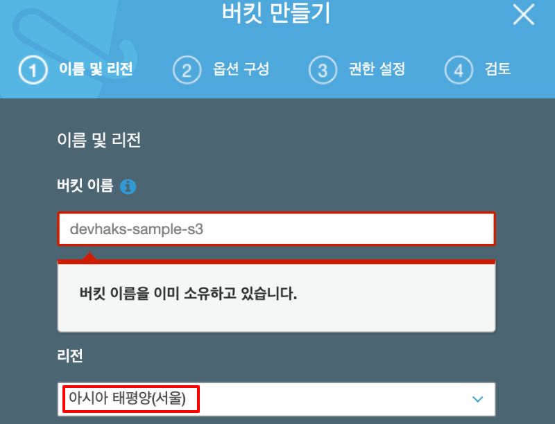S3 버킷 생성- 버킷 이름은
devhaks-sample-s3로 생성했습니다. - 리전은
서울을 선택했습니다.
- 버킷 이름은
다음과 같은 구조로 객체를 생성 합니다. (S3 에서 디렉토리, 파일을 객체라 부릅니다.)
— devhaks-sample-s3
|— thumbnail.png
|— dev/thumbnail.png
|— prod/thumbnail.png- 테스트 이미지 다운로드 => thumbnail.png
- dev, prod 객체를 구분한 이유는 개발과 배포 환경을 구분하여 배포 전에 테스트를 자유롭게 할 수 있도록 설정하기 위함입니다.
3) CloudFront 생성
CloudFront 콘솔에 접속합니다.
Create Distribution클릭 -> Web 의Get started클릭옵션 설정하기
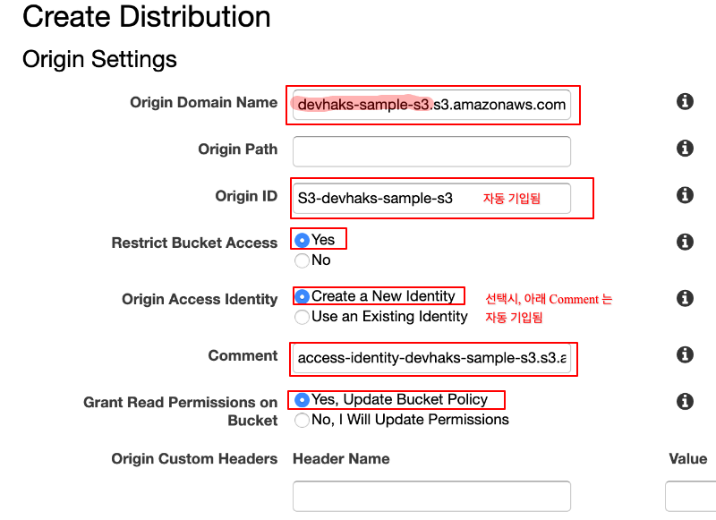1. Origin setting- Origin Domain Name: 생성한 버킷 이름으로 선택
- Restrict Bucket Access: 버킷의 접근 제한을 활성화
- Origin Access Identity: S3의 접근 권한을 얻기 위한 새로운 Identity 생성
- Grant Read Permissions on Bucket: 선택한 S3 의
버킷 정책에 읽기 권한을 자동으로 생성합니다. (아래 이미지 참고)
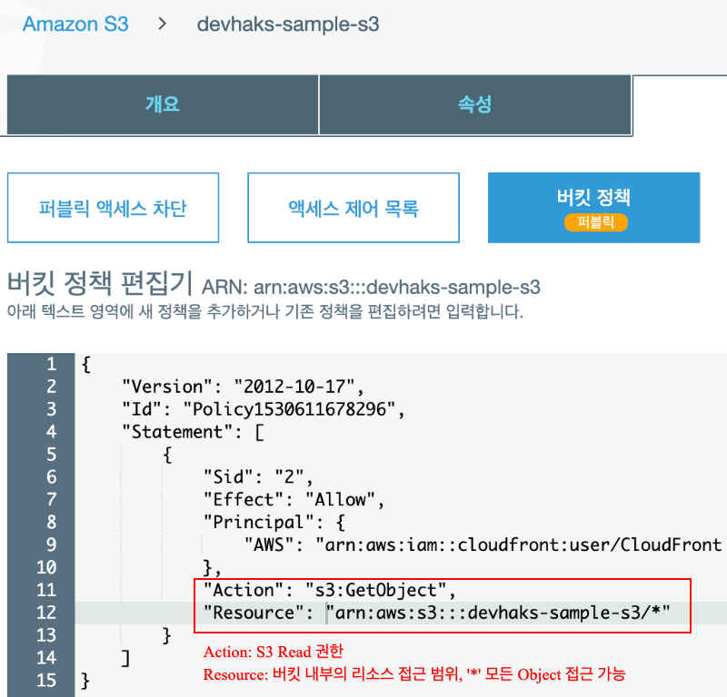CloudFront 에 의해 자동 설정된 S3 버킷 정책
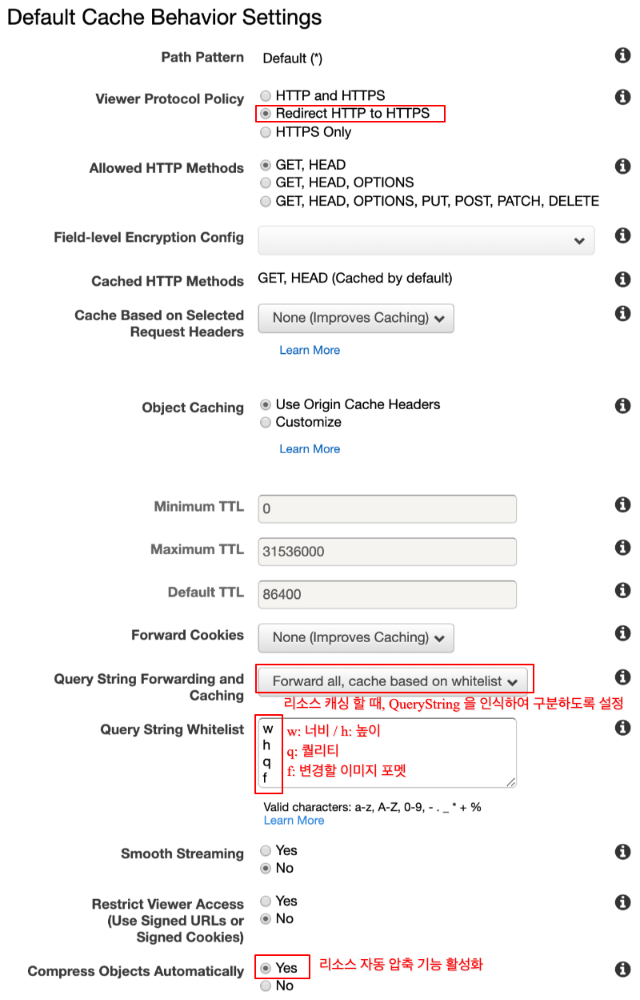2. Default Cache Behavior Settings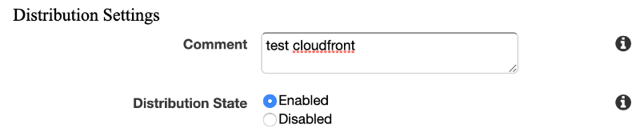3. Distribution Settings
CloudFront cache behavior 추가
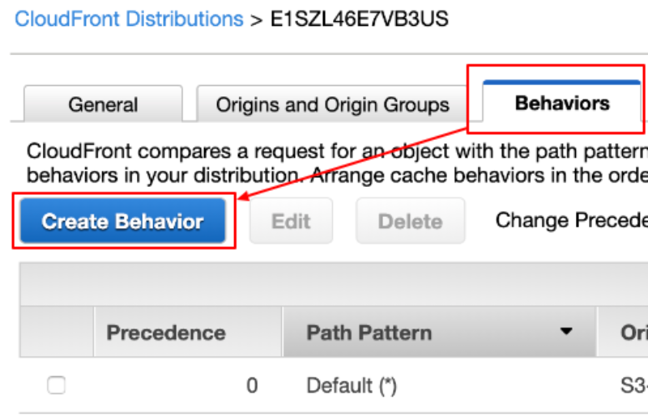Behavior 추가하기- 추가할 때, default behavior 설정과 동일하면서 path pattern 은 다른 behavior 아래 이미지 처럼 추가합니다.
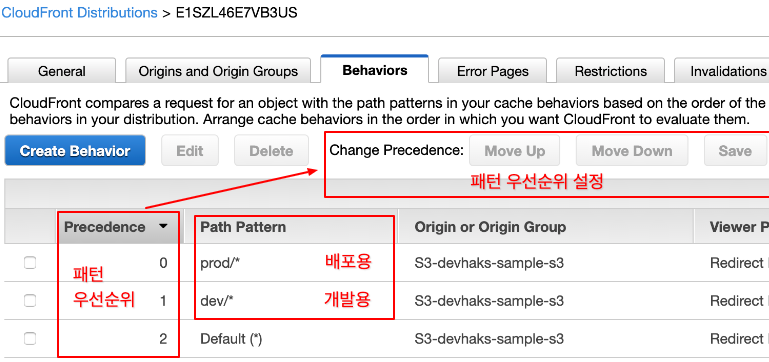개발용, 배포용 behavior 추가 및 우선순위 설정- dev, prod 우선순위 상관 없이 default behavior 보다 우선순위를 높게 설정합니다.
- 숫자가 낮을수록 우선순위가 높습니다.
CloudFront 적용 여부 확인하기
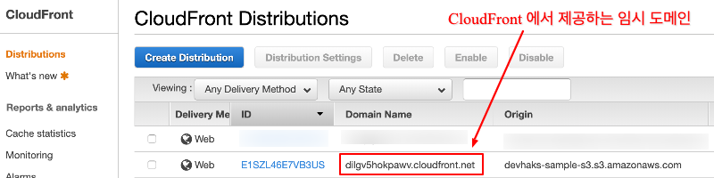CloudFront Dashboard- 대시보드에서 CloudFront
Domain Name을 복붙하여 아래 경로로 이미지를 요청합니다. - https://{Domain Name}/dev/thumbnail.png
- https://{Domain Name}/prod/thumbnail.png
CloudFront 는 글로벌 리전만 존재합니다.
CloudFront 생성 후, 적용되는 약 10분 정도 소요됩니다.- 대시보드에서 CloudFront
4) IAM 역할 생성
- Lambda 함수가 여러 서비스에 접근 가능한 역할을
정책을 조합하여 생성합니다.
역할 콘솔에 접속하여 ‘역할 만들기’ 버튼을 클릭 후, 아래 이미지를 따릅니다.
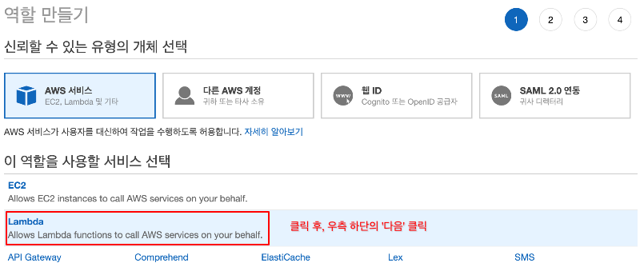역할 생성 1 단계다음 페이지에서 ‘정책 생성’ 버튼을 클릭 후, 아래 정책을 JSON 형식에 복붙합니다. 그리고 ‘정책 검토’ 버튼을 클릭 합니다.
1
2
3
4
5
6
7
8
9
10
11
12
13
14
15
16
17
18
19
20
21{
"Version": "2012-10-17",
"Statement": [
{
"Sid": "VisualEditor0",
"Effect": "Allow",
"Action": [
"iam:CreateServiceLinkedRole",
"lambda:GetFunction",
"lambda:EnableReplication",
"cloudfront:UpdateDistribution",
"s3:GetObject",
"logs:CreateLogGroup",
"logs:CreateLogStream",
"logs:PutLogEvents",
"logs:DescribeLogStreams"
],
"Resource": "*"
}
]
}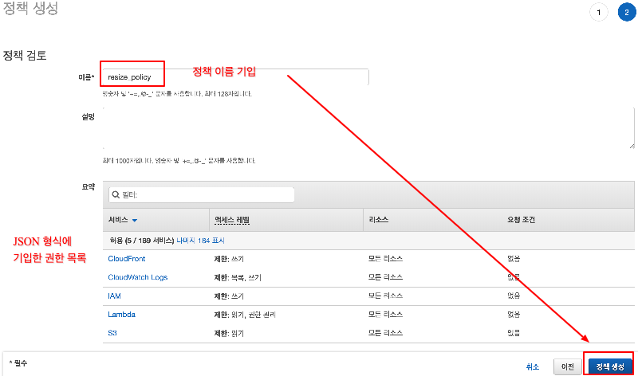정책 생성 2단계- 정책 이름은
resize_policy를 기입합니다.
- 정책 이름은
정책 생성을 완료한 뒤, 역할 생성 2단계에서
resize_policy정책을 연결합니다. 3단계는 건너뛰고 4단계에서 역할 이름을ResizeImage로 기입합니다.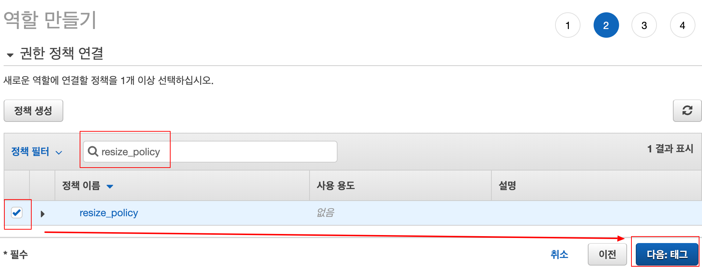역할 생성 2단계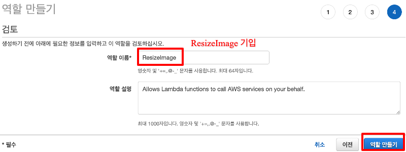역할 생성 4단계ResizeImage역할에 신뢰 관계 추가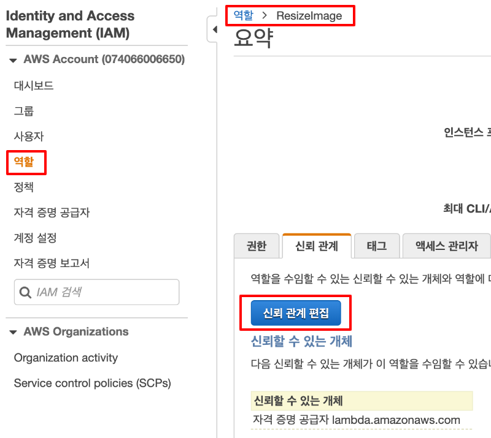ResizeImage 신뢰 관계 편집- 신뢰 관계 편집 “Service” 부분에 “edgelambda.amazonaws.com” 를 추가합니다.
1
2
3
4
5
6
7
8
9
10
11
12
13
14
15{
"Version": "2012-10-17",
"Statement": [
{
"Effect": "Allow",
"Principal": {
"Service": [
"edgelambda.amazonaws.com",
"lambda.amazonaws.com"
]
},
"Action": "sts:AssumeRole"
}
]
}
- 신뢰 관계 편집 “Service” 부분에 “edgelambda.amazonaws.com” 를 추가합니다.
5) Lambda 함수 생성
Lambda 함수 콘솔에 접속합니다.
버지니아 리전을 선택 후, ‘Create function’ 클릭기본 정보 설정
- 함수 이름: ResizeImage
- Runtime: Node.js 10.x
- 권한
- 실행 역할: 기존 역할 사용
- 기존 역할: ResizeImage - 4) IAM 역할 생성
다음 페이지의 기본 설정 후, ‘Save’ 클릭
- 메모리: 함수를 실행하는 환경의 메모리 용량을
128MB로 설정 - 제한 시간: 함수의 실행 제한 시간을
5초로 설정
Lambda@edge 에 배포 하려면 반드시 버지니아 리전에 생성해야 합니다.
Lambda@edge 요금 페이지에 요금 계산기가 있습니다.
Lambda vs Lambda@edge
- 메모리: 함수를 실행하는 환경의 메모리 용량을
- language: Lambda 와 다르게 Node.js 만 지원함.
- Memory: Lambda@edge 메모리 수정 불가하며 128M 고정. 함수 최적화 필수.
- Execution time: Lambda@edge 기본 동작 원리에 request, response 간에 시간도 소요되므로 최소 4초 이상 걸림.
- Deployment size: 함수의 라이브러리 포함하여 압축 용량이 극히 1MB 로 제한적
- Request pricing: 100만건당 기준 비용
- Duration granularity: 비용 측정하는 시간 단위
- 128MB for 100ms: Lambda@edge 가 50ms 실행 했을 때, 비용은 $0.0000003125 입니다.
6) Cloud9 을 이용한 Lambda 함수 작성
AWS Cloud9은 코드 작성, 실행 및 디버깅을 위한 클라우드 기반 IDE입니다.
글쓰는 시점의 Cloud9 은 서울 리전을 지원하지 않습니다.
Cloud9 콘솔에 접속하고 우측의 ‘Create environment’ 클릭
다음 이미지의 설정을 따릅니다.
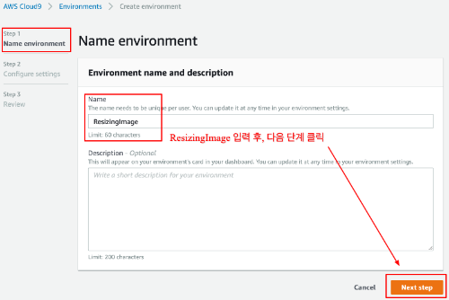cloud9 생성 1단계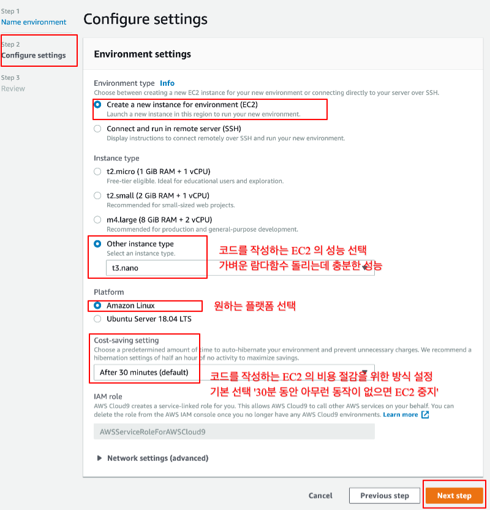cloud9 생성 2단계ResizeImageLambda 함수를 Cloud9 으로 가져 옵니다. (이미지 번호 순서 확인)패키지 설치
- 이미지 리사이징 Sharp 패키지를 설치 합니다.
1
2
3
4
5ec2-user:~/environment $ cd ResizeImage
ec2-user:~/environment/ResizeImage $ npm init -y
...
ec2-user:~/environment/ResizeImage $ npm install sharp
...
- 이미지 리사이징 Sharp 패키지를 설치 합니다.
함수 작성
Gist 에 있는 코드를 코드 작성 영역에 복붙하고 Code Line 14
BUCKET을 수정합니다.1
const BUCKET = 'devhaks-sample-s3' // Input your bucket
코드 설명
다음과 같이 QueryString 으로 이미지 리사이징 할 정보를 추가하여 요청합니다.
Lambda 함수는 요청 주소를 ObjectKey 와 QueryString 을 파싱합니다.
1
2
3
4
5
6
7
8
9
10
11
12const { uri } = request;
const ObjectKey = decodeURIComponent(uri).substring(1);
const params = querystring.parse(request.querystring);
const { w, h, q, f } = params
/**
* Parsing result
* - ObjectKey: 'dev/thumbnail.png'
* - w: '200'
* - h: '150'
* - f: 'webp'
* - q: '90'
*/S3 로 부터 ObjectKey 와 일치하는 이미지 리소스를 가져옵니다.
1
2
3
4
5
6
7
8
9
10try {
s3Object = await S3.getObject({
Bucket: BUCKET,
Key: ObjectKey
}).promise();
}
catch (error) {
...
return callback(null, response);
}이미지를 리사이징 합니다.
1
2
3
4
5
6
7
8
9
10
11
12try {
resizedImage = await Sharp(s3Object.Body)
.resize(width, height)
.toFormat(format, {
quality
})
.toBuffer();
}
catch (error) {
...
return callback(null, response);
}Response 객체의 정보를 수정하고 함수를 종료합니다.
1
2
3
4
5
6
7
8
9
10
11
12
13
14
15
16
17
18
19
20
21
22
23
24
25
26responseHandler(
200,
'OK',
resizedImage.toString('base64'), [{
key: 'Content-Type',
value: `image/${format}`
}],
'base64'
);
/**
* @summary response 객체 수정을 위한 wrapping 함수
*/
function responseHandler(status, statusDescription, body, contentHeader, bodyEncoding) {
response.status = status;
response.statusDescription = statusDescription;
response.body = body;
response.headers['content-type'] = contentHeader;
if (bodyEncoding) {
response.bodyEncoding = bodyEncoding;
}
}
console.log('Success resizing image');
return callback(null, response);Lambda 함수 업데이트
7) Lambda@edge 함수에 Lambda 함수 배포
Lambda 함수 콘솔에 재접속하여
ResizeImage함수 정보로 이동합니다.상단 메뉴에 작업 >
Lambda@edge 배포를 클릭하고 아래 이미지 처럼 설정을 따릅니다.캐시 동작: production 배포 전, 먼저
dev/*에서 테스트를 진행 합니다.CloudFront 이벤트:
오리진 응답(Origin response)을 선택합니다. 왜냐하면 origin 에서 리소스 존재 여부를 판단 후 존재하면, 함수를 실행시켜야 하기 때문입니다.배포 완료된 상태
Lambda@edge 함수에 배포 후, 적용까지 약 3~5분 정도 소요됩니다.
8) 이미지 리사이징 요청하기
요청할 이미지 주소: https://dilgv5hokpawv.cloudfront.net/dev/thumbnail.png?w=200&h=150&f=webp&q=90
리사이징된 이미지 결과 확인
결과를 확인하면 이미지의 800x800 -> 200x150 으로 변경된 이미지를 확인 할 수 있습니다.
개발자 도구를 열어서 이미지 리소스의 response header 를 확인
- content-type: image/webp
- 최초 이미지 요청시
x-cache: Miss from cloudfront - 다음 이미지 요청시,
x-cache: Hit from cloudfront
CloudWatch Log 확인
CloudWatch 콘솔에 접속하여 좌측 ‘로그’ 페이지로 이동합니다.
위 로그 그룹이 보이지 않는다면, 서울 리전을 확인하세요.
이미지 생성이 안될 경우
이 문제는 Lambda@edge 가 배포 되기 전에 이미 한번 요청한 주소의 리소스가 캐시된 경우 발생합니다. 그래서 캐싱된 리소스를
invalidation(무효화)를 해야합니다./dev/*경로는/dev뒤에 붙는 리소스를 가리킵니다. (/ = root path)
CloudFront caching 방식의 기준은 주소 또는 헤더 설정에 따라 다릅니다. 여기서 주소 방식은 QueryString 순서만 변경되어도 다른 리소스로 인식됩니다.
ex 1) ?w=200&h=150&f=webp&q=90
ex 2) ?h=150&w=200&f=webp&q=90
두 이미지의 결과는 동일 하지만, caching은 1번이 아닌 2번이 발생합니다. 심각한 문제는 아니지만. 이미지 리사이징 할때, 똑같은 결과물이 2번 생성하지 않도록 주의 합시다.
9) production 에 배포하기
7) Lambda@edge 함수에 Lambda 함수 배포 과정의 첫번째 이미지에서 캐시 동작을
dev/*로 지정 했었습니다. 이미지 리사이징이 성공했다면,트리거 추가버튼을 클릭하여 캐시 동작을prod/*로 선택하고 나머지 옵션은 동일하게 하여 추가합니다. 아래 이미지 처럼 2개의 CloudFront 이벤트 트리거가 등록된 것을 확인할 수 있습니다.
CloudFront 와 CORS(Cross-Origin Resource Sharing)
위 예제에서는 브라우저 주소창에 이미지 주소를 바로 요청했기 때문에 CORS에 제약을 받는 상황은 없었습니다. 왜냐하면, 브라우저 주소가 이미지 주소의 origin 과 동일한 same origin 이기 때문이빈다.
브라우저 기본 기능에는 <img/>, <script/>, <link/> 태그를 사용하여 리소스를 얻을 수 있습니다.
그러나 XHR (XMLHttpRequest) 로 리소스를 요청 할 경우, CORS 제약을 받아서 리소스를 얻을 수 없습니다. 이러한 경우, 리소스를 보유한 Origin 에서 CORS 정책을 설정하여 해결 해야합니다.
CORS 제약을 받는 상황을 만들기 위해 S3(Origin)에 다음과 같이 pdf 파일을 업로드합니다.
— devhaks-sample-s3
|— devhaks-github-io.pdf (<= 파일 다운로드)브라우저 pdf viewer 로 pdf 를 불러오면, 아래 이미지처럼 에러가 발생합니다.
아래 ‘your_cloudfront_domain’ 부분을 주소에 맞게 바꿔주세요.
- 요청지: https://mozilla.github.io
- Origin: https://your_cloudfront_domain
- pdf viewer 는 pdf 의 주소로 XHR 요청을 보내는데 요청지와 Origin 이 서로 다르기 때문에 위와 같은 에러가 발생한 것입니다.
이를 해결하기 위해 S3 콘솔 -> 버킷 -> 권한 -> CORS 구성으로 이동하여 다음을 복붙하고 저장합니다. 그리고 다시 pdf viewer 를 새로고침 해보면, 정상적으로 pdf 파일이 출력 될 것입니다.
1
2
3
4
5
6
7
<CORSConfiguration xmlns="http://s3.amazonaws.com/doc/2006-03-01/">
<CORSRule>
<AllowedOrigin>https://mozilla.github.io</AllowedOrigin>
<AllowedMethod>GET</AllowedMethod>
</CORSRule>
</CORSConfiguration>
마치며
이번 글을 정리하면서 익숙하지 않았거나 궁금했던 AWS 서비스의 요소들을 자세히 학습하게되서 뿌듯하고 실력이 향상되는 느낌이 많이 들었습니다. 지금은 개발 중인 서비스에 적용한 것에 그치지만 개인 프로젝트를 진행 할 때, 꼭 적용 해봐야 겠습니다.
참고글
heropy tech AWS Lambda@edge로 실시간 이미지 리사이징

{kind=link}
{kind=link}
{kind=link}
{kind=link}
{kind=link}
{kind=link}
{kind=link}
{kind=link}
{kind=link}
{kind=link}
{kind=link}
{kind=link}
{kind=link}
{kind=link}
{kind=link}
{kind=link}
{kind=link}
{kind=link}
{kind=link}
{kind=link}
{kind=link}
{kind=link}
{kind=link}
{kind=link}
{kind=link}
{kind=link}
{kind=link}
{kind=link}